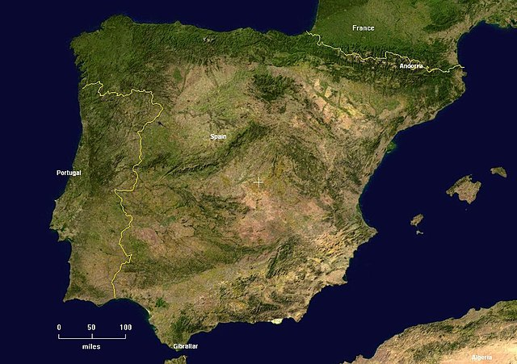
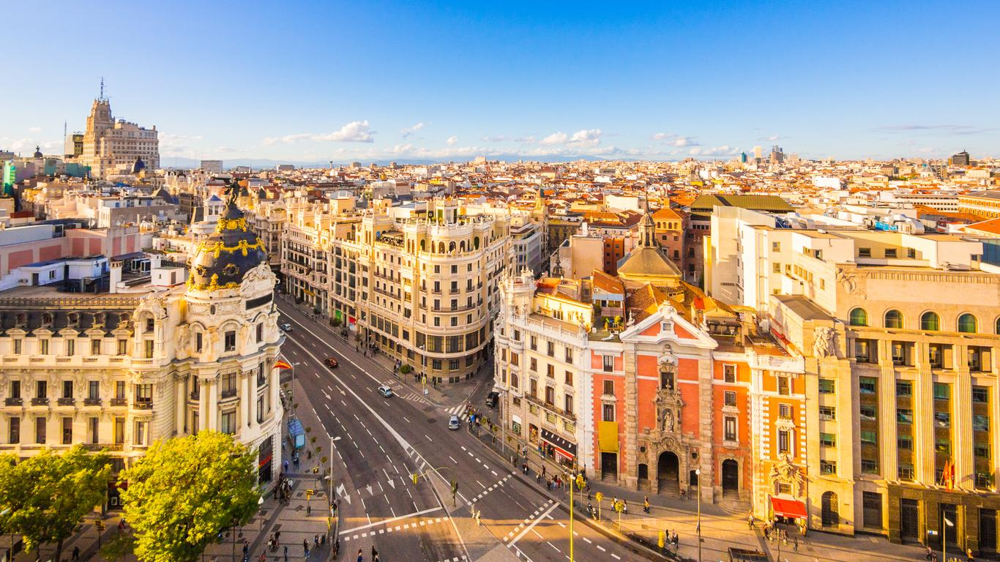
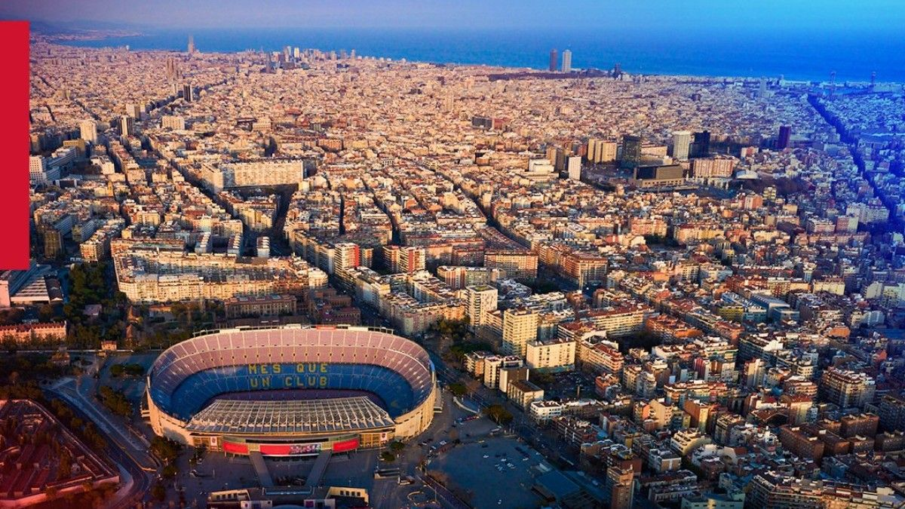
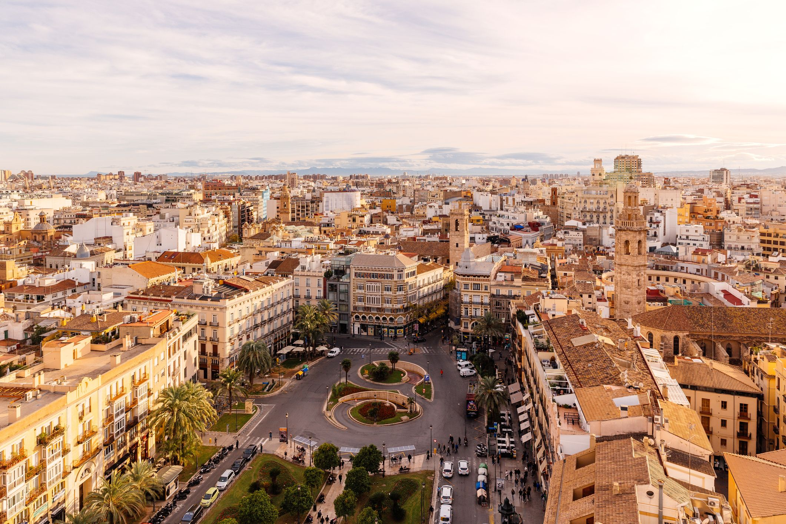

Deriva fonéticamente de Hispania, nombre con el que los romanos designaban geográficamente al
conjunto de la península ibérica,
término alternativo al nombre Iberia, preferido por los autores griegos para referirse al mismo
espacio.
Moneda
Euros
Las monedas en euros tienen una cara común con el mismo diseño para todos los países de la zona
del
euro y una cara nacional,
que identifica al país emisor. En España la moneda se ve así:
Símbolo de moneda
El símbolo del euro es: €.
Capital
La capital de España es la famosa ciudad de Madrid, para más información click en el siguiente
link:
España se encuentra en la península ibérica está se encuentra situada en el extremo suroccidental
del
continente europeo.

Población
La población de España es de 47.78 millones (2022).
Zona horaria
Zona horaria de Madrid, España (GMT+2).
Toda España (salvo las Islas Canarias, donde hay una hora menos) tiene la Hora Europea Central
(la de
Berlín)
en lugar de la Occidental (la de Londres), lo que implica una hora de adelanto con respecto al
sol
en invierno y
dos en verano, como promedio.
Bandera
Los colores de la bandera tienen varios posibles significados. E rojo representa la sangre
derramada por los españoles en defensa de su nación y el amarillo el oro y la riqueza del
imperio.
Territorios
Madrid

Población
Aproximadamente 3.223 millones de habitantes.
Superficie en Km2
Superficie de 604.3 km².
Descripción
Madrid es una ciudad cosmopolita, fiel a sus costumbres, cultura y a su arte, pero a su vez es un
lugar
moderno, alberga centros culturales, económicos y políticos de primer orden en Europa.
Lista de atracciones turísticas más importantes
Museo Nacional del Prado
Estadio Santiago Bernabéu
Puerta de Alcalá
Templo de Debod
Palacio de Cristal
Palacio Real de Madrid
Plaza Mayor
Barcelona

Población
Aproximadamente 1.62 millones de habitantes.
Superficie en Km2
Superficie de 101.9 km².
Descripción
Se encuentra situada en el noreste de España, a escasa distancia de Francia y de los
Pirineos.
La ciudad es famosa por su perfecta infraestructura y distribución de carreteras.
Lista de atracciones turísticas más importantes
Basilica de la Sagrada Familia
Park Güell
Casa Batlló
Catedral de Barcelona
Spotify Camp Nou
Parque de la Ciudadela
Valencia

Población
Aproximadamente 791,413 mil habitantes.
Superficie en Km2
Superficie de 134.6 km² km².
Descripción
Valencia fue fundada por los romanos como colonia en el año 138 a. C. Actualmente es una
provincia
del este de España, y como dato cursioso, Valencia es la ciudad con más semáforos de Europa.